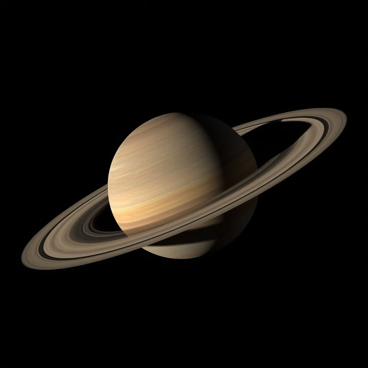

Saturno es el sexto planeta desde el Sol y el segundo más grande del Sistema Solar. Al igual que Júpiter, es un gigante gaseoso, pero su rasgo más famoso y distintivo es su espectacular y masivo sistema de anillos.